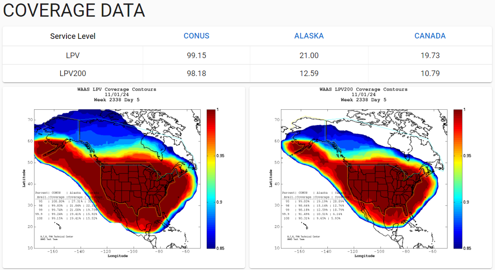
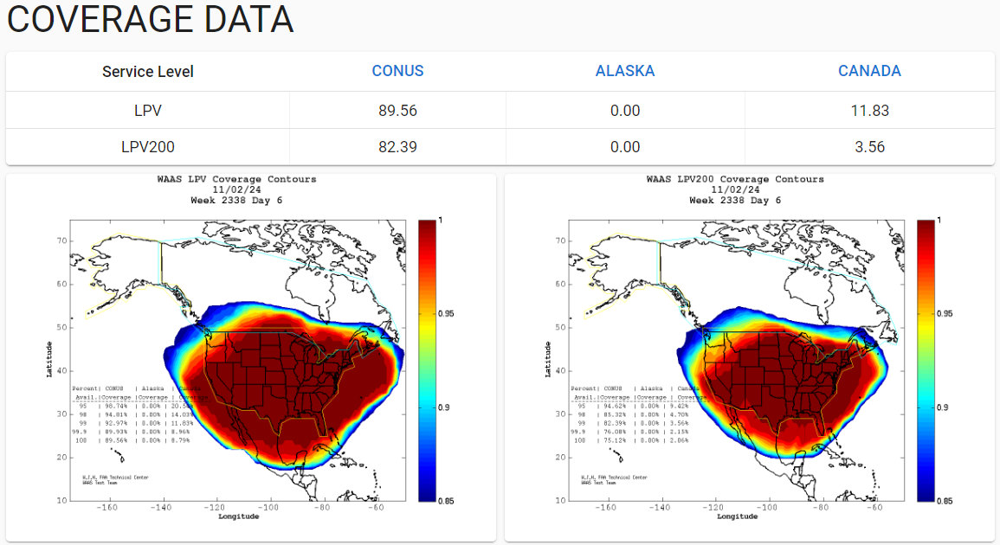
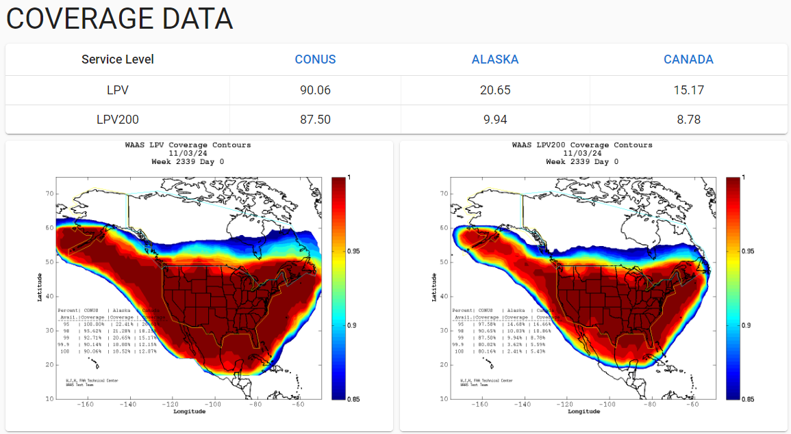
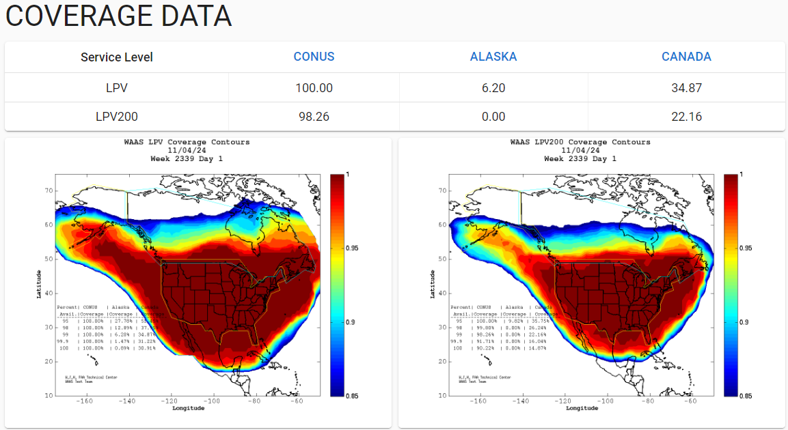
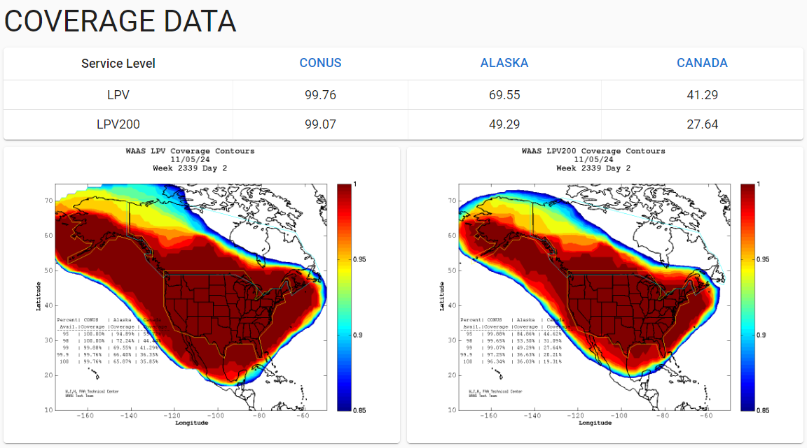
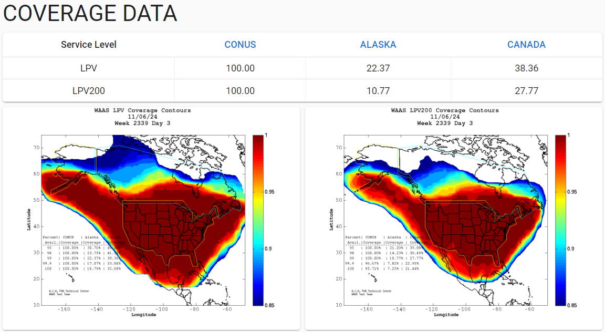

Weekly Highlights 20241030-20241106
10/29 - MSD Ring 2 Comms Attempted...
Juan Manuel has been working to replace the V.35 tails at Tijuana with direct connections from FTI to Frequentis equipment.
- 10/29 22:49 - MSD Ring 2 comms cleared (down since 3/7/2023)! But immediately went back down...
MSD Ring 2 mainly down hard with brief flaps of I/F Up -- longest duration up ~72 seconds...
10/30 - CM1 GUS Fault
- 10/30 05:18 - CM1 GUS Faulted from Backup Mode
with SE 191 C1 KPA Failure;
Wave Guide ARC per site TECH-- ref LIR 887535924; Control Powered and restored to Backup at 10/30 06:51
10/31-11/1 - AP1 CV-GUS Comm Fail Issues
- 10/31 07:02 - GUS Switchover - G30 - BR1 to Primary / AP1 to Backup due to CV-GUS Comm Fail events recurring
- 10/31 17:50 - AP1 ACS-A Reset to address inability
to download error logs; Operators copied error
logs, and AP1 status logs are filling up with
RDSP_MAIN.c - E-RD_HDRSDEPLETED "Transfer headers depleted; record ID 353 not transfered"-- recommend Reset Subsystem - 11/1 14:20 - AP1 GUS Reset to address RDSP issues; restored to Backup at 11/1 15:00
11/1 - CM1 GUS Fault
- 11/1 16:22 - CM1 GUS Faulted from Backup with L1 / L5 LNA Controller Failure; Control Powered and restored to Backup at 11/1 19:52
11/1-... WAAS Coverage Impacts


- 11/3 00:28 - SE 831 Extreme Storm Predicted 01:28; SE 832 Extreme Storm Cancelled at 11/3 00:30


- 11/5 22:40 - SE 831 Extreme Storm Predicted 23:40; SE 832 Extreme Storm Cancelled at 11/5 22:42


11/4 - MTP WREs Alarmed with SE 59
- 11/4 22:08 - All MTP WREs alarmed with SE 59 Rcvr Reception Fault several times ending at 11/4 22:11
11/5 - G30-135 Don't Use
- 11/5 15:06 - GUS Switchover - G30 - AP1 to Primary / BR2 to Backup to resolve Don't Use alarm received at 11/4 17:36 (UDREi dropped to 11 at 11/5 16:52; UDRE Don't Use for ~11h 20m)
11/5 - MSD Ethernet Connection Attempted
- 11/5 17:40 - MSD Ring 1 Serial comms disconnected at ZTL COR-A Router; site offline due to no comm on Ring 2 and failure to automatically transfer to Serial...
- 11/6 18:01 - MSD Ring 1 Serial comms reconnected at ZTL -- further work will occur after AT&T contracts Ethernet delivery with local vendor
11/6 - BR2 Semi-Annual Maintenance
- 11/6 17:02 - BR2 GUS to Maintenance for semi-annual maintenance; ref LIR 856475324; Control Powered and restored to Backup at 11/6 21:05
11/6 - CM1 Brush Fires
- 11/6 19:03 - CM1 OFFLINE due to brush fires; site techicians evacuated...
11/6 - YFB Comms Down for Both Rings
- 10/30 22:23 - YFB Ring 1 comms momentarily restored to flapping until down hard at 10/30 22:50...
- 11/6 18:48 - YFB Ring 2 down hard... both rings to YFB down hard... OFFLINE
Various Comm Impacts
* Only captures major / long-term comm outages
Mexico Comms
- 10/30 07:06 - MSD Ring 1 comms flapping; line cleared at 10/30 14:34 (~~9573 seconds total)
- 10/30 12:06 - MTP Ring 1 comms down hard then flapping; line cleared at 10/30 17:16 (~41391 seconds)
- 10/30 14:36 - MMX Ring 1 + MPR Ring 1 comms down hard; both lines cleared at 10/30 14:46 (~592 seconds)
- 10/30 16:26 - MMD Ring 1 comms flapping; line cleared at 10/30 20:14 (~3429 seconds total)
- 10/31 09:34 - MMX Ring 1 comms down hard; line cleared at 10/31 11:56 (~8396 seconds)
- 10/31 12:14 - MTP Ring 1 comms down hard; line cleared at 10/31 16:06 (~13794 seconds)
- 11/2 00:56 - MTP Ring 1 comms down hard; line cleared at 11/4 17:46 (~233396 seconds)
- 11/5 21:56 - MMD Ring 2 down hard...
- 11/6 06:06 - MTP Ring 1 comms down hard; line cleared at 11/6 12:56 (~23995 seconds)
CDB Comms
- 10/26 13:27 - CDB Ring 1 comms flapping...
- 10/31 23:05 - CDB Ring 1 comms cleared (flapping since 10/26; 111955 seconds total)
Other Sites
- 10/30 07:52 - HNL Ring 2 ALT comms down hard; line cleared at 10/30 10:32 (~9600 seconds)
- 10/31 15:28 - YQX Ring 2 port reset
OTZ Ring 2 PRI / ALT
- 9/18 23:57 - OTZ Ring 1 ALT comms
connected after circuit validation
- Currently the wrong circuit (*508) is being used for OTZ Ring 2 ALT and *509 is connected on OTZ Ring 2 PRI
- FTI is troubleshooting the *509 circuit -- ref LIR 69611621
- Intial alarm light on DNX1U has cleared as of 10/1; further troubleshooting from FTI has not resolved issue...
YFB Ring 1 PRI
- 7/29 17:01 - YFB Ring 1 comms flapping then down hard at 7/29 19:10; loopback testing at 7/30 04:06...
- 7/31 05:08 - YYR Ring 1 down hard + loopback testing impacting YYR Ring 1 and YFB Ring 1 to troubleshoot YFB Ring 1 comms down since 7/29; last event for YYR Ring 1 cleared at 7/31 09:41 (~16389 seconds) -- YFB Ring 1 still down hard...
- 8/10 04:09 - YFB Ring 1 comms UP temporarily; started flapping again at 8/10 08:27 then down hard at 8/10 11:29...
- 9/29 22:29 - YFB Ring 1 comms cleared; down since 7/28 (~2 months)
- 9/30 21:41 - YFB Ring 1 comms down hard again...
- 10/2 17:56 - YFB Ring 1 comms cleared (~1d 20h)
- 10/4 15:37 - YYR Ring 1 + YFB Ring 1 comms down hard; line cleared at 10/4 18:47 (~3h 9m)
- 10/5 18:31 - YFB Ring 1 comms down hard...
- 10/30 22:23 - YFB Ring 1 comms momentarily restored to flapping until down hard at 10/30 22:50...
List of current offline WREs
List of current offline WREs -- ref WAAS Status Monitor
All Depot shipments to Mexico are halted until the customs process can be finalized
- MMX WRE-A - 10/13/24-... - Freq Std failed -- ref LAD 879853824
- MMX WRE-C - 5/15-... - Processor failed and could not be restored
- MPR WRE-B - 5/3-... - Inits failing -- looks like a bad freq std; due to shipping issues, there is no spare Freq Std and no ETA to recover WRE-B...
5/11/23-... - MX Ring 2 Satcom Upgrade
- 5/11/23 17:01 - MX Ring 2 SatCom upgrade begins; MX Ring 2 OFFLINE until upgrade troubleshooting is complete
MX WAAS Sites comm upgrades in progress:
- 10/27/23 - Frequentis has delivered to Tijuana, needs to be connected to FTI delivery
- 11/2/23 - FTI has initiated coordination with Tijuana to install and test direct connection to Frequentis -- MMD Test on 12/6/23
- 2/15/24 - MMX Ring 2 successfully connected through Tijuana to ZLA COR-B!
- 6/5/24 - Telco issue localized to Tijuana for 4 out of 5 circuits; MSD appears to have issue at ZLA
- 8/6/24 - MMD Ring 2 successfully connected!
- 9/19/24 - Telco issues at TJX and MSD issue at ZLA resolved; MTP Ring 2 successfully connected!
3 of 5 sites are currently connected through (only enough V.35 adapters for 3x connections), but zero UDP data on Ring 2
FTI-Harris working with Tijuana to deliver new SDP termination to remove V.35 connection and connect directly to satcom

Major Events


Core I/F Status

Comm Events

Mexico Comm Status